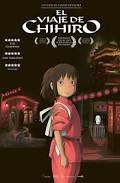
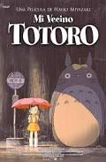
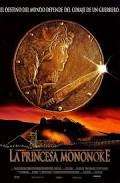
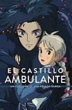
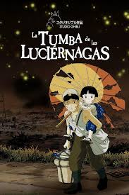

📜 Origen.
Studio Ghibli fue fundado el 15 de junio de 1985 tras el éxito crítico y comercial de la película Nausicaä del Valle del Viento (1984). El estudio nació de la unión de Hayao Miyazaki, Isao Takahata y el productor Toshio Suzuki, bajo el respaldo financiero de la editorial Tokuma Shoten. El nombre "Ghibli" proviene de una palabra italiana que hace referencia al viento cálido del desierto del Sahara, reflejando la ambición de los fundadores de "hacer soplar un nuevo viento en la industria de la animación".
Hayao Miyazaki.
Aunque Studio Ghibli es el resultado de un equipo, Hayao Miyazaki es su figura central y más reconocida a nivel mundial:
- Primeros años: Nacido en 1941, su infancia estuvo marcada por la Segunda Guerra Mundial. La empresa de su padre, Miyazaki Airplane, fabricaba piezas para aviones, lo que alimentó su fascinación de por vida por volar y las máquinas voladoras.
- Trayectoria: Comenzó su carrera como animador en Toei Animation, donde conoció a su mentor y futuro socio, Isao Takahata.
- Filosofía: Miyazaki es conocido por su perfeccionismo (dibujando él mismo miles de fotogramas), su profundo respeto por la naturaleza, el pacifismo y la creación de personajes femeninos fuertes e independientes. A pesar de haber anunciado su retiro en varias ocasiones, su pasión por narrar historias le ha llevado a regresar al cine repetidamente.
Peliculas mas conocidas.
Studio Ghibli ha producido más de 20 largometrajes, pero estos son los títulos más emblemáticos:
-

El Viaje de Chihiro (2001): Ganadora del Óscar a la Mejor Película de Animación. Es considerada una de las mejores películas de todos los tiempos. -

Mi Vecino Totoro (1988): La figura de Totoro se convirtió en el logotipo del estudio y en un icono cultural global. -

La Princesa Mononoke (1997): Una épica histórica y fantástica que aborda la lucha entre la civilización humana y los dioses del bosque. -

El Castillo Ambulante (2004): Basada en la novela de Diana Wynne Jones, destaca por su increíble diseño visual y su mensaje antibélico. -

La Tumba de las Luciérnagas (1988): Dirigida por Isao Takahata, es reconocida como una de las películas más conmovedoras y crudas sobre las consecuencias de la guerra.